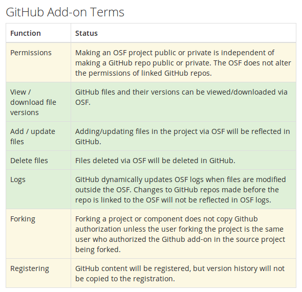
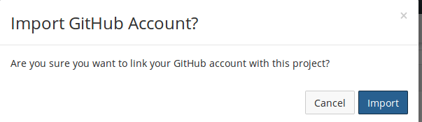

Opening Your Research Using GitHub & the Open Science Framework
Vicky Steeves | February 15, 2017

A Reminder of Some Open Access Principles
- Green (freely accessible, self-archived) vs. Gold (researcher-paid freely available) Access
- Most data archives/publishers are green, though a few provide deeper preservation (quasi-gold)
- Close link between publication and data archiving (i.e. archiving by journals) means data archiving may be green/gold depending on journal
- Levels of archiving: Self-Archived/Minimally Described vs. Self-Archived Well-Described vs. Fully Archived
Some Minimum Requirements
Data and code must be:
- Persistently linked (At least URI/URL...preferabally DOI)
- Searchable and browsable
- Retrieved or downloaded easily
- Citable
1st Thing: Git != GitHub
Git is a revision control system, a program to manage your source code history. It is strictly a command-line tool.
GitHub is a website where you can upload a copy of your Git repository. It allows people to collaborate via Git along with some other features.
Resources For Learning More
Git
- TryGit: enter commands in-browser!
- Git: The Simple Guide: step-by-step Git tutorial
- Think Like A Git: for someone who's been using Git, but doesn't feel they really understand it.
GitHub
- GitHub Guides: official help docs
- GitHub Training Videos: official video tutorials
- Lynda.com: free tutorials with NYU credentials
What is the Open Science Framework?

A free and open source project management tool that connects researchers to the tools they are already using to make management easier through the research cycle.
Why Use the OSF?
- Preserve your current workflow, file types, and standard operating procedures
- Enhance those workflows by better documentation, sharing, and discovery of your research materials
- Gather together group permissions, various storage options, bibliographic management, and publication in one place
- OSF is the work of a non-profit, the Center for Open Science, dedicated to supporting open science using open-source tools
OSF Integrations with Research Tools

Getting Started: OSF at NYU
Sign up at osf.io using your NetID and create your account.
Click on "Sign In" and at the bottom of the sign-in box, the link for "Login Through Your Institution."

Setting Up a Project
Go to https://osf.io or just click "My Projects" on the top bar.
Click "Create Project" and fill in the form. 
Don't Be Afraid of How Blank It Looks...
Let's Add Collaborators
Click "add" button next to the title of the page. 
Let's Add Collaborators
Search for the person to your right and add them.
Setting Up Addons
Try adding an account of your own by clicking on your profile, then "Settings," then "Configure Add-on Account." Click on "Connect Account" next to an addon.

Back to Your Project: Select Your Project Add-ons
Go to project "Settings," then "Select Add-ons"
Adding Your Addons

Authorizing Your Addons
Choose Your Repo (or make a new one!)
Working with Your Files
Click on "Files" on Your Project Top Menu
From here, you can:
- See all files from OSF storage and any configured addons
- Drag and drop files into any kind of storage, OSF or otherwise
- Create folders in OSF storage for better organization

Tagging Files
When you click on a file in OSF, it renders right in-browser. On the bottom right is the "tag" field, where you can enter whatever you want.
Try adding 2 tags to your file and compare with the person to your right

Versioning Files
When you click on a file in OSF storage, you can also see and download all the versions of that file that have been uploaded.
THE CATCH: The file has to be uploaded with the same name!

Documenting with the Wiki

This also has a robust versioning. And you can compare versions side-by-side.

Best Practices with the Wiki
Use the "Home" wiki page as a table of contents listing project goals, personnel, sub-components, and links to important files.

Components
Components are essentially "sub-projects" that can have their own set of collaborators, add-ons, and access controls.

Sharing
Everything (files, subcomponents, wiki docs) gets a short permalink in OSF.
That makes it easy to share via e-mail, Twitter, pastebins, etc.
You can also share projects via a view-only link, including an option to anonymize contributors for blind peer review.

Before you publish: Clean & Prep Your Code!
Step 1a: Comment & style your code—
- COMMENT YOUR STUFF. PLEASE.
- Use the Pep 8 Python style guide!

Before you publish: Clean & Prep Your Data!
Step 1a: Put your data into an open format!
- Be software agnotic!

Step 1b: Package Your Materials
- Data files
- Documentation & description in OSF wiki or upload metadata
- Analysis tools if possible
Publishing
When you want to publish your final product, you register it. All the files are pulled into an archive on OSF storage, and the project becomes read-only.
You can get a DOI for this project, and include it in a "Supplementary Materials Section" of a journal article.

The Why of
Data & Code Citation
Data and code should be cited within our work for the same reasons journal articles are cited:
to give credit where credit is due (original author/producer) and to help other researchers find the material.
Getting Data & Code Cited

Advantages to Tracking Citations:
- Demonstrate to funders/promotion committees you & your data make big impacts in your field!
- they judge merit based on intellectual merit and wider impact
- tangible evidence to weigh against the cost of research
- Monitor usage of datasets!
- You can know what forms of data prep and data publication are most effective for sharing/open science!
- Uncover opportunities for collaboration amongst peers
Analytics in the OSF
All OSF projects start private. We can make them public and publish them, we reap some benefits, like built-in analytics!

Questions?
Email me: vicky.steeves@nyu.edu
Learn more about RDM: guides.nyu.edu/data_management
Get this presentation: guides.nyu.edu/data_management/resources
Make an appointment: guides.nyu.edu/appointment